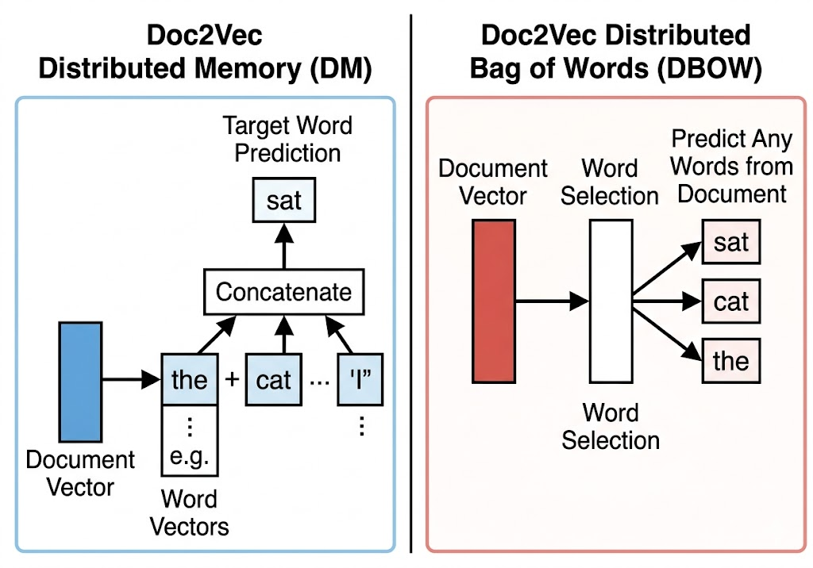
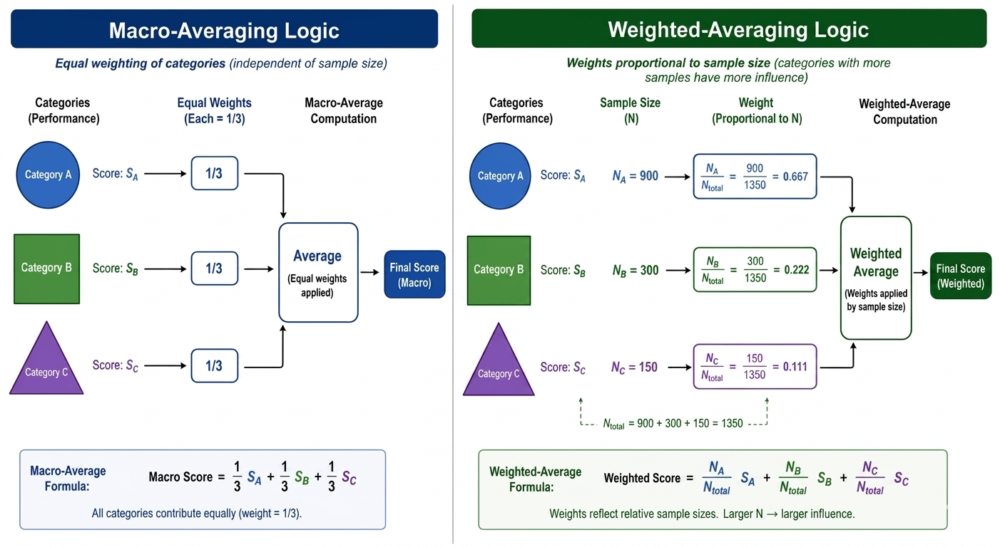

Remark
These lecture notes are in early access and will continue to evolve based on classroom experience and feedback.
3.4. Document Embeddings with Doc2Vec#
Section Goal
By the end of this section you will understand how Doc2Vec learns a single, fixed-length vector for every document without aggregating word vectors, and you will be able to train a Doc2Vec model on a real six-class emotion dataset, infer document vectors for unseen text, and critically interpret classification performance in the presence of severe class imbalance.
3.4.1. Learning objectives#
By the end of this section, you should be able to:
Explain how Doc2Vec (Paragraph Vectors) differs from word-averaging approaches to document representation.
Describe the two Doc2Vec variants (Distributed Memory and Distributed Bag of Words) and their trade-offs.
Prepare a corpus for Doc2Vec training using Gensim’s
TaggedDocumentformat.Train a Doc2Vec model and infer vectors for unseen documents.
Use Doc2Vec features with a logistic regression classifier for multi-class text classification.
Interpret classification results in the presence of significant class imbalance, distinguishing macro from weighted F1.
3.4.2. Limitations of word averaging revisited#
In the previous section, we built sentence representations by averaging word vectors. While effective for many tasks, this approach has a fundamental weakness: it discards word order and produces the same representation for any permutation of the same words.
Consider these two sentences:
“I am not happy, I am sad.”
“I am not sad, I am happy.”
Both contain exactly the same vocabulary ({I, am, not, happy, sad}) and therefore produce the identical average word vector, despite having opposite meanings. A classifier cannot distinguish them.
More broadly, word averaging maps every document to a single point that is the center of its vocabulary’s embedding cloud. This representation works well when topic (which words appear) is the primary discriminant, but fails when fine-grained differences in composition or word order matter.
Doc2Vec addresses this by learning a dedicated vector for each document that captures properties not expressed by any individual word’s embedding.
3.4.3. How Doc2Vec works#
Doc2Vec (also called Paragraph Vectors, introduced by Le & Mikolov, 2014) extends Word2Vec by introducing a document token — a unique identifier for each document — that acts as an additional, document-specific context signal during training.
The key insight is that while word vectors must generalize across many documents, the document vector only needs to represent one document. So it can encode whatever distinguishing features — topic, style, sentiment, tone — are unique to that document.
There are two variants:
3.4.3.1. Distributed Memory (DM)#
In the DM variant, the model predicts a target word using both:
A fixed-size window of surrounding words (as in Word2Vec CBOW).
The document vector for the document containing those words.
The document vector acts as a memory that holds information about the document’s topic and style. Because it participates in every prediction within that document, it must encode whatever information about the document is not captured by the local word context.
3.4.3.2. Distributed Bag of Words (DBOW)#
In the DBOW variant, the model predicts randomly sampled words from the document using only the document vector — no word context is used. This is faster to train and sometimes performs comparably to DM.
DBOW is faster and works well when documents are long, but DM often produces better representations for short texts like tweets or sentences.
{kind=link}

Fig. 3.14 Neural network architectures for Doc2Vec variants. Left (Distributed Memory - DM): The document token is treated as an extra word vector, concatenated or averaged with local context words to predict a target word. Right (Distributed Bag of Words - DBOW): The model ignores context windows entirely and trains the document vector by forcing it to predict randomly sampled words from the document.#
3.4.3.3. Key difference from word averaging#
Aspect |
Word Averaging |
Doc2Vec (DM) |
|---|---|---|
Vector per word |
Pre-trained, fixed |
Trained jointly with doc vector |
Vector per document |
Derived (average) |
Directly learned |
Word order |
Ignored |
Partially captured (window context) |
Document identity |
Implicit (via avg) |
Explicit (separate document token) |
Inference on new docs |
No retraining needed |
Requires |
Training time |
Fast (just load model + average) |
Slower (trains embedding model) |
What does “training” mean for Doc2Vec?
When we say Doc2Vec trains a document vector, we mean the model runs gradient descent to find the vector that best predicts the words in that specific document. This is the same optimization used in Word2Vec, but applied to a document-level token.
For training documents, the document vector is learned once and stored in the model. For new, unseen documents (the test set), the model runs a short inference procedure — infer_vector() — that freezes the word vectors and only updates the new document vector via a few gradient descent steps. This is why Doc2Vec requires a separate inference call for test documents.
3.4.4. The emotion dataset#
Here, we use the dair-ai/emotion dataset from Hugging Face. It contains over 400,000 English text samples, each labeled with one of six emotion categories.
Label |
Emotion |
Approximate count |
% of total |
|---|---|---|---|
1 |
Joy |
141,067 |
~34% |
0 |
Sadness |
121,187 |
~29% |
3 |
Anger |
57,317 |
~14% |
4 |
Fear |
47,712 |
~11% |
2 |
Love |
34,554 |
~8% |
5 |
Surprise |
14,972 |
~4% |
The dataset is heavily imbalanced: Joy and Sadness together account for about 63% of all samples, while Surprise represents only about 4%. This imbalance strongly affects which classes a model handles well and how aggregate metrics should be interpreted.
The texts come from Twitter-style short messages, so they use informal language, contractions, hashtags, and emoji-adjacent expressions.
Example entries:
Emotion |
Text |
|---|---|
Joy |
“i feel so lucky to have found such an amazing group of friends” |
Sadness |
“im feeling quite sad and sorry for myself” |
Anger |
“im feeling incredibly frustrated and angry with this situation” |
Fear |
“i feel like ive been walking on eggshells im so scared” |
Love |
“i just feel so warm and loved when i am with you” |
Surprise |
“i feel astonished that things have changed so dramatically” |
The 9.4x imbalance ratio (Joy vs. Surprise) is the key challenge: a naive classifier that always predicts “Joy” would achieve 34% accuracy, higher than many weakly-trained multi-class models.
3.4.5. Text preprocessing for Doc2Vec#
The text samples come from tweets, so we use NLTK’s TweetTokenizer to handle mentions, hashtags, and informal language. Stopwords and digit-only tokens are removed; punctuation and emoticons are kept since they carry emotional signals — an exclamation mark or a sad-face emoticon is genuinely informative for emotion classification.
TweetTokenizer vs. word_tokenize
NLTK provides several tokenizers for different purposes:
word_tokenize: splits text on whitespace and punctuation following Penn Treebank conventions. Works well for formal text but treats Twitter-specific tokens (@mentions, #hashtags, emoticons) poorly.TweetTokenizer: handles Twitter-specific conventions:strip_handles=Trueremoves @mentions,preserve_case=Falselowercases everything, and emoticons like:)or:(are kept as single tokens rather than split into punctuation characters.
For social-media text like the emotion dataset, TweetTokenizer is the better choice.
Example — before and after preprocessing:
Before: "i feel so lucky to have found such an amazing group of friends"
After: ["feel", "lucky", "found", "amazing", "group", "friends"]
Stopwords (i, so, to, have, such, an, of) are removed, leaving only the content words. For emotion detection, the retained words — lucky, amazing, friends — are strong Joy indicators.
3.4.6. Training a Doc2Vec model#
Gensim’s Doc2Vec requires documents to be wrapped in TaggedDocument objects, pairing each token list with a unique string tag. We use the string representation of the training index as the tag. The tag is used internally by the model to look up each document’s dedicated vector during training.
3.4.6.1. Key hyperparameters#
Hyperparameter |
Value |
Effect |
|---|---|---|
|
50 |
Dimensionality of document and word vectors |
|
0.025 |
Initial learning rate |
|
5 |
Ignore words appearing fewer than 5 times |
|
1 |
Distributed Memory (DM=1) vs. Distributed Bag of Words (DBOW=0) variant (see Fig. 3.14). |
|
100 |
Number of training passes over the corpus |
Choosing min_count=5 is important for this noisy social-media corpus: words that appear fewer than 5 times are likely typos or very rare terms that would add noise rather than signal.
3.4.6.2. Training dynamics#
Doc2Vec uses a decaying learning rate: starting at alpha=0.025 and linearly decreasing to min_alpha=0.0001 over the specified number of epochs. More epochs generally improve representation quality, but with diminishing returns after 50–100 epochs for this dataset.
The three-step Doc2Vec training procedure:
build_vocab: scans the corpus once to build the vocabulary, applyingmin_countto filter rare words.model.train: runs the gradient descent optimization for the specified number of epochs. This updates both word vectors and document vectors simultaneously.model.infer_vector(inference time): for a new document not seen during training, runs gradient descent while keeping word vectors frozen — only the new document vector is updated.
Why build_vocab before train?
build_vocab collects all unique tokens and creates the internal lookup tables that train needs. It also computes word frequencies used for subsampling and negative sampling — techniques that improve training quality and speed. Calling train without first calling build_vocab will raise an error.
3.4.7. Inferring vectors and classifying#
After training, we infer a vector for each document in both the training and test sets, then train a logistic regression classifier on top. The infer_vector() method runs a few gradient descent steps to find the best document vector for a new (unseen) token list.
3.4.7.1. A note on inference stochasticity#
The infer_vector() method uses random initialization, so repeated calls on the same document will produce slightly different vectors. For reproducibility, fix the random seed when building the model and use a consistent number of inference epochs:
Increasing the number of inference epochs (default is the same as model.epochs) produces more stable vectors but takes proportionally longer.
3.4.8. Interpreting results#
Typical results from the lab (test set):
Emotion |
Precision |
Recall |
F1 |
Support |
|---|---|---|---|---|
Sadness |
0.72 |
0.51 |
0.60 |
24,237 |
Joy |
0.80 |
0.56 |
0.66 |
28,213 |
Love |
0.32 |
0.56 |
0.41 |
6,911 |
Anger |
0.48 |
0.58 |
0.53 |
11,463 |
Fear |
0.49 |
0.62 |
0.55 |
9,542 |
Surprise |
0.18 |
0.53 |
0.27 |
2,994 |
Macro avg |
~0.50 |
|||
Weighted avg |
~0.57 |
|||
Accuracy |
~0.55 |
3.4.8.1. Reading the results#
Joy and Sadness achieve the highest F1 scores (0.66 and 0.60). This reflects both their large support (more training examples) and their relatively distinct vocabulary. Joy texts use words like happy, lucky, grateful; Sadness texts use sad, lonely, depressed.
Love and Surprise are the hardest classes. Love may be expressed using language similar to Joy (happy, warm, wonderful), making the two classes difficult to separate. Surprise is severely under-represented (only ~4% of the dataset), so even with balanced class weights, the model has very little signal to learn from.
Macro F1 (~0.50) is much lower than Weighted F1 (~0.57). This gap shows how imbalance distorts aggregate scores: the weighted F1 is dominated by Joy and Sadness performance and masks poor results on Love and Surprise. When reporting to stakeholders, always clarify which averaging method you are using.
Accuracy (~55%) seems modest, but consider that random guessing on a six-class problem achieves only 1/6 ≈ 17%, and a majority-class classifier (always predict Joy) achieves only ~34%. Doc2Vec at 55% is doing genuine work.
{kind=link}

Fig. 3.15 Conceptual mechanics of \(F_1\) aggregation. Macro-averaging treats all categories equally, exposing weaknesses in minority classes like Surprise. Weighted-averaging scales each score by its support size, allowing high-volume classes (Joy and Sadness) to artificially inflate the apparent health of the overall system.#
3.4.8.2. Confusion matrix for emotion classification#
The confusion matrix typically reveals that:
Joy and Love are frequently confused (both positive emotions with overlapping vocabulary).
Fear and Sadness are sometimes confused (both negative, both described with loss/vulnerability words).
Surprise is frequently misclassified as Joy or Sadness (due to very low support).
3.4.8.3. Document similarity with Doc2Vec#
A useful property of trained document vectors is that you can find similar documents using cosine similarity — documents about the same emotion topic cluster together in the 50-dimensional space. This nearest-neighbor search is a practical tool for error analysis and data exploration.
Documents most similar to a joy-expressing query:
[Sadness] want feel completely devastated utterly overjoyed... (score=0.6737)
[Fear] know happy feeling little threatened... (score=0.6089)
[Sadness] feel strangely hopeless also happy excited weird... (score=0.6025)
[Joy] would feel flattered b incredibly relieved... (score=0.5849)
[Joy] feel glad glad feel sad sad knew going smile without... (score=0.5825)
Note
Notice that the top retrieved documents are labeled [Sadness] and [Fear]. This occurs because these short tweets contain mixed signals (e.g., combining “devastated” with “overjoyed”). In a lower-dimensional 50-dimensional vector space trained for only 100 epochs, complex or noisy sentences can easily cross fine-grained emotional boundaries. This highlights that while Doc2Vec excels at capturing broad thematic concepts, it can struggle with crisp boundaries on short, highly conflicting text strings.
This nearest-neighbor search confirms that similar emotions cluster together, and highlights boundary cases where the model might confuse two emotions.
3.4.9. Doc2Vec vs. word averaging: when to choose each#
Criterion |
Word Averaging |
Doc2Vec |
|---|---|---|
Training needed? |
No (just load pre-trained vectors) |
Yes (train on your corpus) |
Works out-of-the-box on new domains? |
Yes, if vocabulary coverage is sufficient |
Requires training data |
Captures document-level style? |
Weakly |
Yes |
Short document quality |
Can be poor (few words to average) |
Better (dedicated vector) |
Inference time |
Very fast (lookup + mean) |
Moderate (gradient descent steps) |
Interpretability |
Low |
Low |
For very small datasets (a few hundred documents), word averaging with pre-trained vectors is usually preferable — there is not enough data to train good Doc2Vec representations. For larger corpora (tens of thousands or more), Doc2Vec can capture document-level patterns that word averaging misses.
3.4.10. Key takeaways#
Summary
Doc2Vec learns a dedicated vector for each document by including a document token as an additional context during Word2Vec-style training, allowing it to capture topic and style information that word averaging misses.
The Distributed Memory (DM) variant uses both word context and the document vector to predict words; the Distributed Bag of Words (DBOW) variant uses only the document vector. DM generally works better for short texts.
Use
class_weight="balanced"when training on imbalanced corpora; without it, the classifier will heavily bias toward majority classes.Always report both macro-averaged and weighted-averaged F1 on imbalanced datasets and interpret them separately. Macro F1 shows average performance across all classes; weighted F1 reflects the user’s overall experience on the actual class distribution.
Doc2Vec document vectors support nearest-neighbor document retrieval as a by-product of classification training — a useful tool for error analysis and dataset exploration.
For small datasets, word averaging with pre-trained vectors is usually a safer choice than training a Doc2Vec model from scratch.
3.4.11. Exercises and discussion#
Vector size effect Train Doc2Vec models with
vector_sizeof 20, 50, and 100 (keeping other parameters fixed) and compare their test-set accuracy and macro F1. At what point does increasing the vector size stop helping? Plot the trade-off curve.DM vs. DBOW Gensim’s Doc2Vec supports two variants: Distributed Memory (
dm=1) and Distributed Bag of Words (dm=0). Train both on the emotion dataset and compare macro F1 per class. Which variant works better for Surprise and Love — the hardest classes?Combining word and document vectors Try concatenating the Doc2Vec document vector with the average Word2Vec vector for the same document as a combined 350-dimensional feature (50 + 300). Does combining representations improve macro F1? Which emotion class benefits most?
Epoch sensitivity Train models with
epochsof 10, 50, and 100. Plot macro F1 vs. number of epochs. How much do additional epochs help, and is there a point of diminishing returns?Error analysis Extract all test-set examples where the true label is Surprise (label 5). What fraction does the model correctly identify? What emotion labels are the Surprise examples most often confused with? Read 10 misclassified Surprise examples and explain in one sentence per example why the model might have predicted the wrong class.